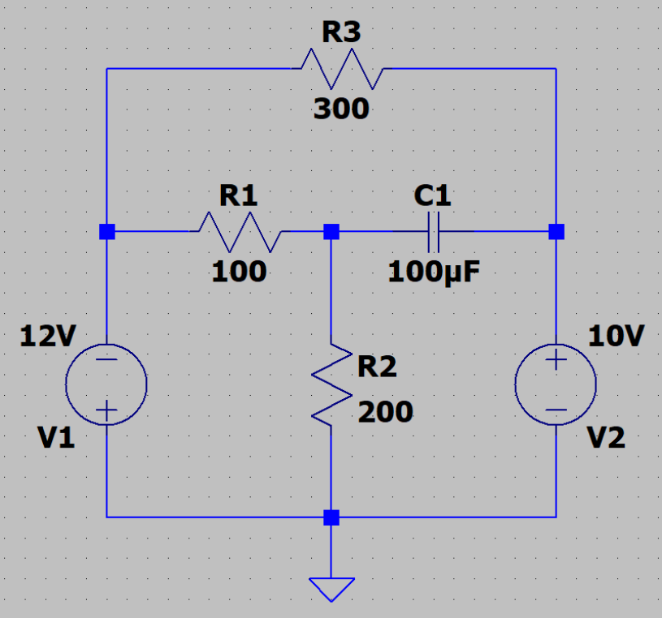

☰ Oversigt
✎ Træn 10 opgaver
ELE1 · EKSAMENSSPØRGSMÅL 2
Kirchhoffs spændingslov
Går du en tur rundt i en lukket sløjfe, kommer du tilbage til samme "højde". Summen af spændinger er
nul
.
(a) FORKLAR · 2 SLIDES
Hvad KVL siger, og hvorfor. Maskestrømsmetoden trin for trin, og hvorfor kondensatoren er en
afbrydelse
i DC steady state.
(b) BEREGN · 2 SLIDES
Kredsløbet til højre: find maskestrømmene og strømmen gennem R₁, R₂ og R₃. Antag steady state og kun DC.
Opgavens kredsløb

→ / mellemrum: næste · ←: forrige · F: fuld skærm
SPM. 2 (a) · 1/2
Spænding er som højde på en vandretur
rundt og hjem: samme højde
Turen rundt om bjerget
start = slut
+12 m
−4 m
−8 m
12 − 4 − 8 = 0
Kilden er
op ad bakke
, og modstandene er
ned ad bakke
. Hjemme igen er du i samme højde.
Kirchhoffs spændingslov
sløjfe
En lukket vej
rundt i kredsløbet, der ender, hvor den startede. Den mindste sløjfe kaldes en
maske
(et "vindue").
Stigning.
Går du gennem en kilde fra − til +, løftes potentialet (op ad bakke).
Fald.
Går du gennem en modstand
med
strømmen, falder potentialet med
(ned ad bakke).
hvorfor
Energibevarelse.
En ladning, der kører en tur rundt, får præcis den energi tilbage, den har brugt.
Prøv selv: højden rundt i sløjfen
Kilde V
R₁
R₂
SIG
Rundt i en lukket sløjfe er summen af spændinger nul. Det, kilderne
løfter
, falder igen over modstandene. Det er energibevarelse.
SPM. 2 (a) · 2/2
Maskestrømsmetoden
og hvorfor kondensatoren er en afbrydelse i DC
1
Find vinduerne
(maskerne). Opgaven har tre: nederst til venstre, nederst til højre og øverst.
2
Giv hver maske en strøm
, alle samme vej rundt (her mod uret).
3
DC steady state
ingen strøm gennem C, så de to masker, der deler C, har samme strøm:
4
KVL i hver maske
. I en fælles gren løber
forskellen
:
.
5
Løs
og find grenstrømmene.
Kontrollér
med knudespændinger.
Hvad sker der med C₁ = 100 µF, når kredsløbet tændes?
Tid efter tænd
SIG
Når kondensatoren er ladet op, ændrer spændingen sig ikke mere. Så er
, og C er et
hul
i kredsløbet. Her tager det ca. 33 ms (5τ).
SPM. 2 (b) · 1/2
Tre masker, men kun to ubekendte
V₁ = 12 V
− opad
V₂ = 10 V
+ opad
R₁ = 100 Ω
R₂ = 200 Ω
R₃ = 300 Ω
C₁ = 100 µF
→ afbrudt i DC
1
C₁ afbrudt
: ingen strøm i C₁, så
2
KVL, maske 1
(V₁ gennemløbes fra − til +: stigning 12 V)
3
KVL, supermaske 2+3
(udenom C₁: R₃, R₁, R₂ og V₂)
4
Sæt
ind og læg sammen
Maskerne (alle mod uret)
Positive svar betyder, at strømmene løber den vej, pilene viser.
SIG
Tre masker, men C₁ er et hul i DC, så
I₂ = I₃
. Der er to ligninger tilbage:
I₁ = 113 mA
og
I₂ = I₃ = 73 mA
.
SPM. 2 (b) · 2/2
Strømmene i R₁, R₂ og R₃ og en kontrol
5
Grenstrømme fra maskestrømmene
fra midten mod venstre
opad, fra jord mod midten
fra højre mod venstre
6
Kontrol med spændinger
(jord = 0 V): venstre top −12 V, højre top +10 V
og over C₁ ligger
Hvad nu hvis …
Opgaven
V₂ vendt (+ nedad)
R₃ = 600 Ω
C₁ byttet ud med en ledning
V₁
V₂
I
1
I
R1
= I
R2
I
R3
SPÆNDING OVER C₁
SIG
R₁ og R₂ får 40 mA, og R₃ får 73 mA. Kontrollen med knudespændinger giver det samme. C₁ bærer ingen strøm, men har 18 V over sig.